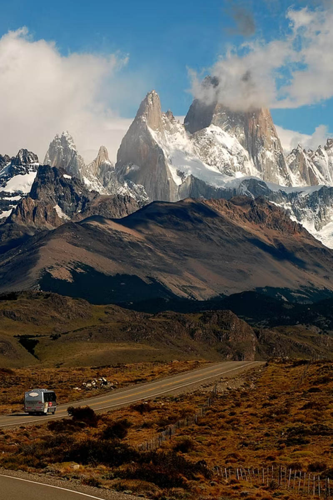

Algunas imágenes...



Somos una empresa familiar de Turismo que brinda un servicio de calidad a quien nos elija y deposite
su confianza en nosotros, para que se lleven el mejor recuerdo de nuestra ciudad.
Contamos con guías y choferes expertos que durante todo el trayecto estarán atentos a sus
necesidades.
Tenemos la fuerza y el entusiasmo de la juventud unida al conocimiento de cada rincón de la
geografía
chubutense, condimentos necesarios para la aventura.
Ese es el compromiso de Corcovado
Express, sellamos un pacto de confianza, seguridad y amistad desde el primer momento.
Una cabalgata entre montañas que incluye el vadeo del río Corcovado y una serie de arroyos, llegando a un paraje llamado Poncho Moro y de allí accediendo hasta la cima, desde donde la vista panorámica alcanza al río Corcovado, el cerro La Virgen y la cordillera.
Este sitio se encuentra en las inmediaciones de la ruta que lleva a Carrenleufú donde el río Hielo forma un cajón particular, en una zona donde se asentaron los primeros pobladores y donde funcionó la primera escuela.
Este sitio se encuentra en las inmediaciones de la ruta que lleva a Carrenleufú donde el río Hielo forma un cajón particular, en una zona donde se asentaron los primeros pobladores y donde funcionó la primera escuela.
Este circuito, cercano al pueblo, permite una exquisita caminata por un bosque de ñires, lauras, radales y coihues hasta llegar, ya en la montaña, a la "Cabeza de Indio".
Una corta caminata de montaña junto al arroyo Huemul permite acceder a un punto panorámico sumamente interesante.
A poco del complejo turístico La Colina el sendero lleva a la laguna El Carbón, donde en las inmediaciones se encuentran frutillares silvestres, calafates y otras especies autóctonas.
En la naciente misma del río Corcovado, el puente de la ruta 44 es la referencia para los pescadores que vienen en busca del Salmón del Pacífico.También este lugar suele ser el punto de partida de las bajadas en rafting.
Es el lago más grande de la zona y, de su superficie, aproximadamente la mitad, se encuentra en territorio chileno. El paisaje que lo rodea es imponente y sus aguas cristalinas son codiciadas por los pescadores más avezados.